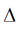

41
Three-Terminal Nonlinear (Diffused and Poly-Silicon) Resistor Model and JFET Model (r3)
The r3 model is a nonlinear 3-terminal resistor model that includes self-heating, velocity saturation, statistical variations, and parasitic capacitances and currents. The core depletion pinching model formulation is for p-n junctions of diffused resistors, but is also applicable for the MOS behavior of polysilicon resistors. As p-n junction depletion pinching controls JFET device behavior, the r3 model is also applicable to JFETs.
This chapter covers the following information about the r3 model:
- Usage
- Bias Dependence of Resistor Body Current
- Bias Dependence of Parasitics
- Geometry Dependence
- Temperature Dependence
- Noise
- Operating Point Information
- Statistical Variation
- Notes on Parameter Extraction
- Reference
Usage
Exact usage may be simulator dependent. For example, whether the local temperature rise node for self-heating is made available or not, and whether the initial instance key-letter “r” is required.)
r<instanceName> (<n1> <nc> <n2> [dt]) <modelName> <instanceParameters>
.model <modelName> r3 <modelParameters>
The dt node is the rise above the local temperature caused by the thermal power dissipated by the device being modeled.
Figure 41-1 r3 Model Equivalent Network
Example
r00 n1 n2 n3 p0 l = 2e-6 w = 10e-6 m = 10 sw_et = 1
model p0 r3 type=1 shrink=50 xw=0.01 nwxw=0.1 wexw=0.1 xl=0.01xlw=0.2 dxlsat=0.01
+rcw=0.01 ca=1e-4 cja=1e-4 cp=1e-10 cjp=1e-10 dfw=1e-3 dfl=1e-3 dfwl=1e-3
+tc1=1e-3 tc2=1e-4 tc1l=1e-3 tc2l=1e-4 tc1w=1e-3 tc2w=1e-4 tc1rc=1e-3 tc2rc=1e-4 tc1kfn=1e-3
+tc1vbv=1e-3 tc2vbv=1e-4 tc1nbv=1e-3 sw_dfgeo=0 rc=1
The parameter examples are given below.
Figure 41-2 Instance Parameter examples. The end region dogbone may be asymmetric.
Bias Dependence of Resistor Body Current
The r3 model includes three basic forms of bias dependence. First, from the depletion (p-n junction or MOS) pinching of the conducting channel of the resistor. Second, from velocity saturation. And third, from self-heating.
The basic p-n junction depletion pinching bias dependence comes from the analysis of [1], with the simplification of [2] (which merges the vertical and lateral bias dependence into a single bias dependent form with geometry dependent parameters). The applicability of the same general form of bias dependence for poly resistors, where the MOS depletion effect pinches the resistor body, was shown in [3]. The fundamental form of the depletion pinching model is
where V21 = V(i2) - V(i1) and V1c = V(i1) - V(nc). Here, dp is the depletion potemtial (which is just the model parameter dp), df is the depletion factor, and gf is the conductance factor; these are determined from instance and model parameters as detailed in the section on geometry dependence.
The velocity saturation model is a mobility reduction term that divides the conductance factor. The model is smooth and symmetric, has value 1 when V21 = 0 , and asymptotically approaches 1+(E ?ecorn)/ecrit for large field E= V21/(leff_um + dx1sat) (leff_um is defined in the next section).

(see Figure 41-3) where

The V21 used in the above expressions is smoothly limited so as not to exceed a saturation voltage Vsat , which is calculated as the V21 at which the output conductance becomes zero. To determine Vsat a slightly modified form of the velocity saturation model is used (the asymptotic form noted above), that allows closed form solution and guarantees that any imprecision in calculation of Vsat is such that the output conductance at saturation is positive, so that there are no “wiggles” around the transition to saturation. The smooth transition is implemented through the above equation.

where ats is a model parameter that controls the limiting. This limiting function differs from those often used in compact MOSFET models; it preserves symmetry. The control voltage used is also limited, to the pinch-off voltage

The self-heating affects the current through the temperature variation of the model parameters, primarily the sheet resistance. The current flowing between nodes n2 and n1 in Figure 41-1 is then
Figure 41-3 Velocity Saturation Model
Bias Dependence of Parasitics
If there are no area or perimeter component of saturation current, e.g. for poly resistors,

If there are area and/or perimeter components of saturation current, e.g. as for diffused resistors, the parasitic diode currents are

where Vc1 = V(nc) - V(i1) and Vc2 = V(nc) - V(i2). Each individual component of the diode currents is linearized for forward biases greater than the voltage at which the component is imax.
The breakdown currents, which are added to each parasitic current, are
and each of these is linearized for reverse biases greater than the voltage as which the magnitude of the current is imax.
The parasitic capacitances comprise a bias independent component (intended for poly resistor modeling) and a bias dependent component (intended for diffused resistor modeling). The capacitances are implemented as bias dependent charges, but the resulting capacitances are given here

The forward bias junction capacitance components are modified so that when the junction voltage (Vc1 or Vc2 ) reaches fc multiplied by the associated built-in potential, the capacitance becomes linear in voltage, to avoid the singularity at the built-in potential. If the smoothing parameters aja and ajp are positive, then the transition from depletion to linear capacitance is done smoothly and not abruptly.
The thermal resistance and capacitance for the self-heating model are linear, and do not depend on temperature. The thermal power used for self-heating modeling is the sum of the powers of all dissipative (non-storage) elements in the equivalent circuit; i.e. the resistor body, the two end resistances, and two parasitic current sources.
Geometry Dependence
Unless otherwise noted, all r3 model quantities scale with the multiplicity parameter m as defined in the Verilog-A Language Reference Manual (LRM), version 2.2.
The r3 model includes several mechanisms for deviations of the effective electrical length and width of a resistor from the drawn (design, or mask) values. The drawn length and width of the resistor, in units of microns, are
Because subcircuit models for resistors can consist of multiple resistance sections connected in series, it is desirable to be able to switch on and off the “end corrections” for length to facilitate implementation of such multi-section models. This is the function of the c1 and c2 instance parameters of the r3 model. The effective length offset is

(which is zero if neither end is contacted, xl+xlw/w_um if both ends are contacted, and one half of the latter if only one end is contacted). The effective electrical length, in microns, is

For flexibility of separately fitting low bias resistance and velocity saturation, an additional offset dxlsat is added to leff _ um for calculation of the electric field used in the velocity saturation model.
The effective width offset includes the physical effect models derived in [4]. These comprise a fixed offset for mask bias, lithography, and etching effects, and geometry dependent offsets for LOCOS, the webbing effect, and the finite dopant source effect. The effective electrical width, in microns, is
where the width of the dogbone (see Figure 41-2), for the webbing effect model, in units of microns, is

The depletion potential does not have a geometry dependence, so dp=dp. The depletion factor depends on geometry as
where the width W and length L are effective geometries if sw_dfgeo=1 and design geometries otherwise (in units of micron). The zero-bias resistance, which factors in the zero-bias depletion pinching, is then
Although end effects, such as spreading resistance and contact resistance, are assumed to be modeled via the xl parameter, the temperature coefficients of the end effects may differ from those of the body of the resistor. Simple analysis shows that these different temperature coefficients can be accounted for by introducing inverse length dependence to the temperature coefficients. A width dependence of temperature coefficients of resistance is also included in the model. Therefore in r3
where the length dependence is switched on, off, or halved, depending on whether the resistor is contacted at both ends, not contacted, or contacted at only one end, respectively. The dependence of the temperature coefficients on whether a resistor is contacted or not enables consistent modeling of temperature coefficients for single or multiple section models.
The thermal conductance and capacitance include area, perimeter, contact, and fixed components. Asymptotically for a large area device, the heat flow is perpendicular to the plane of heat generation in the resistor, and the heat energy stored in a device depends on its volume, hence the area dependent component. For a long resistor, as it becomes narrower more of the heat flow is conducted by a “fringe” path at the edges of the device, hence the perimeter dependent component. As both length and width decrease, the thermal conditions in the device asymptotically approach that of a point source in an infinite medium, hence the fixed component. Contacts conduct heat flow, hence the contact component. The thermal conductance and capacitance are therefore
the area and perimeter are calculated as
The calculated perimeter therefore depends on whether the ends are contacted or not. Often, the design dimensions of the body of a resistor differ from the overall dimensions of the device, for example if the design length is considered to be the unsalicided length of a poly resistor, the total resistor length will typically include silicided contact regions. So it is not readily apparent what dimension should be used in calculation of the thermal conductance and capacitance. That is why the design dimensions, rather than some effective dimensions (whose value is calculated to best fit DC electrical data), are used. This turns out to be reasonable (with the exception that differences between the perimeter components along length and width dimensions are ignored), because if there is some difference  between design and effective dimensions for thermal conductance modeling, then for a device contacted at both ends
therefore any difference between design and effective dimensions can be taken into account by appropriate characterization of the fixed, perimeter, and area component parameters.
Because the local thermal conductance differs between the edge of a device and the center of a device, it is higher at the edge because of fringing conductance, the temperature of a resistor undergoing self-heating is not spatially uniform, but is lower at the edges than in the middle. This is not taken into account in the r3 model.
The end resistances are calculated from the resistance per contact and the number of contacts (parallel to the width dimension; adding contacts parallel to the length dimension, which can be done for reliability purposes, does not alter the resistance much – unless the contact adjacent to the resistor body fails)
The velocity saturation model includes geometry dependence in the bias dependent portion of the model evaluation, as it is formulated in terms of the electric fieldE=V21/(leff_um+dxlsat).
The areas and perimeters of the end region partitions, used in parasitic calculations, are in units of microns


If the number of contacts is not known, it can be calculated (see Figure 41-2). Let the contact width (in the direction parallel to the resistor width) be wc, the minimum spacing from a contact to the edge of the region it is in at the contact head of the resistor be wc2e, and the (minimum) spacing between contacts be wc2c. If (as in some older technologies) contacts can be scaled, then rc should be set to be the resistance of a minimum width contact and

and for technologies where the contact width is fixed (assuming the maximum possible number of contacts are places)
Temperature Dependence
The zero-bias resistance R0 varies with temperature as
where R0 is the nominal value of the zero-bias resistance at the nominal temperature tnom, dT is the temperature difference (including self-heating) with respect to tnom, and TeffC1 and TeffC2 are first (linear) and secon (quadatic) order effective temperature coefficients. Smooth limiting of the resistance temperature coefficient is implemented to a minimum value of 0.01. The conductance factor is then
The end resistances vary with temperature as
and again the temperature coefficient is limited to a lower value of 0.01.
The parasitic diode saturation currents vary with temperature as
where rT is the ratio of device to nominal temperature (in Kelvin), and Vtv = kT/q is the thermal voltage. The temperature dependence of the junction built-in potentials is

with a physically based modification to smoothly limit the potential to zero for high temperatures, and not allow it to become negative. The area and perimeter junction zero-bias capacitance temperature variations are

The flicker noise coefficient varies with temperature as

where kfn and tc1kfn are model parameters (and the resulting KFN is clipped to zero as a lower limit).
The breakdown voltage and ideality factor vary with temperature as

Noise
The noise model comprises two body components, a thermal (white) noise component and a flicker (1/f ) noise component, thermal noise components for each contact resistance, and short noise components for each parasitic diode. These components are noise current spectral density (in A2/Hz ) that are implemented as a noise current sources in parallel with the associated element.
The thermal noise component of the resistor body is based on its DC conductance,

where k is Boltzmann’s constant, TK is the device temperature (in Kelvin, including the effect of self-heating), and Geff is the effective conductance of the resistor (at the temperature T ). Similarly the thermal noise of each end resistances is

The flicker noise component is DC current dependent and scales with geometry per the physical restrictions mentioned earlier.

where f is frequency (in Hz ), afn and bfn are model parameters, KFN(T ) is the temperature dependent flicker noise coefficient, I21 is the DC current in the resistor body, and W and L are the resistor width and length respectively, in units micron (µm). If the switch parameter for flicker noise geometry calculation sw_fngeo is 0 (false) then W and L are design geometries, w_um and l_um respectively, else if it is 1 (true) then W and L are effective geometries, weff_um and leff_um respectively.

for each parasitic diode, where Idiode is the current in the diode.
Operating Point Information
Table 41-1 Operating Point Parameters
All flow and parameter quantities are for the overall device and include the rffect of the multliplicity parameter m.
Statistical Variation
The r3 model includes both global (inter-die, correlated between individual devices) and local (mismatch, uncorrelated between individual devices) variations. These can be added “on top” of a core model using subcircuits, however this can involve increased complexity in model parameter files and increased computational overhead during simulation. Therefore statistical variation is “built-in” to the r3 model, including instance parameters for control of mismatch variation for individual devices.
Besides convenience and efficiency, the statistical variation modeling in r3 naturally embodies the geometry dependence of total variation in a device, which is not possible with statistical modeling based on a geometry independent global variation and geometry dependent correlation coefficients. Since it is based on independent statistical parameters for global variation and instance specific local variation, it does not require generation of correlated samples for distributional (i.e. Monte Carlo-like) simulation; if correlations were used then N (N ?1) 2 of them are required for each statistical parameter for each of N devices.
Statistical variations are modeled in three parameters; the sheet resistance, the effective length variation, and the effective width variation. These are considered as the primary physical process parameters that determine the resistor behavior. At present, there is no variation (global or local) in other physical quantities such as contact resistance, other parasitics (zero-bias depletion capacitance for diffused resistors varies with doping), or the parameters that control the nonlinearity of the model. If experimental data shows that linkage to more fundamental physical quantities such as doping levels and layer thicknesses is required to model correlations and statistical variations, this will be added in the future.
The local variation of the effective width is controlled by line edge roughness in the length dimension; its variance is therefore inversely proportional to the resistor length L. The local variation of the effective length is controlled by line edge roughness in the width dimension; its variance is therefore inversely proportional to the resistor width W.The local variation of the sheet resistance is controlled by random dopant fluctuations; its variance is therefore inversely proportional to the area of the resistor, WL. For flexibility in fitting experimental data, the sw_mmgeo flag allows the controlling geometries W and L to be either drawn or effective (as calculated before the statistical variations are applied, to avoid an implicit dependency that requires an iterative solution).
The total variance of a parameter is the sum of the variances of the global variance (which is independent of geometry) and the local variance (which depends on geometry g , which can include area, width, and length),
This naturally embodies the geometry dependence of the overall variance of a particular parameter. For statistical simulation, the perturbations of the global variation and the individual instance variation are expected to be statistically independent. But “proper” statistical simulation of a circuit requires inclusion of both global parameters and local parameters for every instance of a device type in a circuit. This can cause the number of statistical parameters included in a statistical simulation to increase proportionally with the number of devices in the circuit, with a concomitant explosion in the number of (local) statistical parameters needed to be included for a “proper” analysis. This is, for brute force statistical simulation, clearly impractical.
The r3 model therefore includes a mechanism for more efficiently accounting for the geometry dependence of the overall variation. The sw_mman switch is provided to allow specification on an instance-by-instance basis of whether a device is being included in mismatch analysis. If yes, then both global and local (instance specific) statistical variation parameters are expected to be generated for each device instance, and the global and local variations are modeled separately. If no, which is appropriate for devices for which local variation is not expected to affect circuit performance, then the global variance for a device is adjusted to be the total variance for that device. This appropriately models the geometry dependent total variance for the device, with the consequence that it makes the total variation completely
correlated between all devices (that are not selected for individual mismatch analysis); this will cause overestimation of the variation of the circuit performances, i.e. the simulations from this will be pessimistic.
If mismatch analysis is selected, then the statistical variations are

where the nominal values are those defined in the section on geometry dependence. (The above expressions are used to update the effective geometries and resistance values, and all previous model equations use the values calculated earlier. However, for clarity of presentation and ease of interpretation, the previous equations are not cluttered with the statistical variations).
The variations in effective length and width are absolute, and are additive, and that the variation in sheet resistance is multiplicative. For small variations exp
This approach allows statistical modeling via uncorrelated normal variables, yet can capture log-normal distributions and correlations between parameters, via the dependencies on the fundamental process parameters that control the device behavior. Mismatch is modeled via independent perturbations in individual devices, which is physically correct. To simulate mismatch between two devices the mismatch instance parameters for both devices must be selected for statistical perturbation, and this easily extends to more than two devices, and implicitly accounts for geometry differences between different devices. If mismatch is characterized from differential measurements between two identically sized devices, then the measured standard deviations need to be divided by 2 when mapped into the model parameters smm_w, smm_l, and smm_rsh.
If mismatch analysis is not selected, then the total variance is used as the global variance,
The nsig parameters should be equated to global statistical variables in model files, as they are model parameters, not instance parameters. These parameters then should vary with case/corner and distributional simulations.
Notes on Parameter Extraction
This section provides some information that can help in setting up parameter extraction algorithms. It describes techniques to get initial values that can then be refined by optimization. It does not give a complete and perfect procedure for parameter extraction. As this section does not deal with the details of the model, but how to determine parameters from measured data, V and I have been used in this section only as the voltage across, and current through, the complete resistor (and not just the core resistor body, as is done in previous sections).
Techniques for extraction of basic parameters, such as rsh, xl, and xw, some temperature coefficients and their geometric scaling, etc. are provided earlier and are not repeated here. Additional extraction techniques for the core bias dependence are provided here.
The fundamental depletion (p-n junction or MOS) pinching component of the model is given earlier. Velocity saturation and self-heating affect the bias dependence for E=VL significantly different from zero. Therefore the basic parameters of the model for one geometry, gf, df, and dp, should come from analysis of data where depletion pinching dominates, i.e. from low V, ideally extrapolated to, or measured (from small-signal AC excitation) at V=0. (The large signal conductanc eg=IV cannot be directly calculated at V=0, but is equal to the small signal conductance g=I/V at that bias).
There are at least three approaches to determine the basic depletion pinching parameters, for diffused resistors. If the conductanc e g is known from measurements at three different biases, then the parameters can be calculated as follows. For these biases, (Vi=V+2V1c for the ith values of V and V1c)

and manipulating the above equation for two pairs of biases, and forming the difference, gives

Starting with an initial estimate of dp = 2 , the equation can be solved using Newton-Raphson iteration. Then
An alternative is to, assuming that the depletion pinching effect is small, initialize gf to g at the lowest (zero) Vi, set dp = 2 , and then calculate an initial df at the highest Vi.A 3 dimensional Newton-Raphson iteration can then be used to solve for gf, df, and dp at the three Vi values.
A direct solution also exists.
and forming the difference between this quantity for two combinations of the selected three bias points gives

These two quantities can be calculated from the Vi and gi data using the above equation
The nonlinearity from the depletion pinching has the greatest sensitivity to dp for small Vi, therefore one bias should be at as small a V as possible (zero, if small-signal conductance is being used as opposed to large signal conductance) and V1c=0.
Preferably data should be taken for 3 or more V1c values (including zero). If such data are available then the other points used for extraction should be at the smallest Vds and the second lowest V1c, and the smallest V and the highest V1c. If data for only two V1c values (including zero) are available, besides the lowest V and lowest V1c point, use the lowest V1c point with a V higher than the smallest value and both small enough to ensure self-heating and velocity saturation effects are negligible and large enough to be sufficiently different from the lowest V value (so as not to be sensitive to measurement noise), and again as a third bias use the smallest V and the highest V1c point.
For poly resistors, the pinching effect is from the depletion region at the bottom of the resistor, and the conductance of a poly resistor is

where X, W and L are the thickness, width, and length of the polysilicon film that makes up the resistor, kSi and kox are the relative dielectric permittivities of silicon and silicon dioxide, Tox is the oxide thickness,  is the resistivity, and
is the resistivity, and V0=q SiN/C2ox
SiN/C2ox
For typical poly resistors on relatively thick oxides, the V0, which can be identified as the several tens or hundreds of volts, compared to the 1-2V value (twice the built-in potential) for dp resistor. Therefore the resistor conductance is
which, as measured data also shows, has a linear g(V1c) dependence. This means that there are only two independent quantities that can be extracted from measured data, the zero-bias value
and the slope
. Yet there are three parameters for the model. Physical quantities are needed to break this indeterminacy.
where µ0 and are the low field mobility and sheet resistance of the poly, respectively. Therefore from the slope and zero-bias conductance

Calculating large signal conductance g=I/V for small V can be problematic; V needs to be small enough so that self- heating and velocity saturation effects do not affect the device, but large enough so that g can be calculated reliably. For poly resistors, there is an alternative method to characterize the depletion pinching parameters. If V1c =0, and V is swept from a negative to a positive value (this is not possible for diffused resistors, as the parasitic junction diodes would become forward biased), then the conductance g(V) has a roughly parabolic shape near V=0. For poly resistors with negative temperature coefficients of resistance, the conductance increases (from self-heating) as the magnitude of the applied V bias increases (for sufficiently high V the conductance starts to decrease from velocity saturation, leading to a horned characteristic in the plot). If the temperature coefficient of resistance is positive, the conductance will decrease as V increases (in roughly the same manner as the effect of velocity saturation, which makes them difficult to distinguish, without including additional data such as the frequency dependence of the output conductance).
For some magnitude of applied V, of both positive and negative signs, the effects of velocity saturation and self-heating should be the same (with the difference noted below). Therefore the plot of g(V) should, to first order, be symmetric about V=0.
However because the V2c bias differs between the positive and negative V cases, the amount of depletion pinching is different, and this introduces a slight asymmetry in the characteristic. (If the currents differ then so will the self-heating, but this should be a second order effect and so is ignored here). Because the effects of velocity saturation and self-heating affect the zero bias conductance and the mobility reduction parts of the model, the ratio of the magnitudes of currents with positive and negative V of equal magnitude cancel these

and therefore reveal the effect of depletion pinching. As with the low V bias analysis above, dp can be calculated and then df , or at least in initial value of it for optimization, can be determined from the slope of the ratio in the above equation versus V (once it stabilizes, the ratio tends to be noisy for low V).
For poly resistors where self-heating dominates the non-linearity, at low V,the g(V)parabolic shape is primarily determined from mobility reduction due to self-heating, therefore
gtha is allowed to be estimated.
One other recommendation is that one basic goal of the model is to model the deviation from linearity (which is important for distortion modeling), and to extract model parameters.
Because of local variation (mismatch), it can be difficult to merge data from different devices for model parameter extraction. Therefore extraction from individual devices can be beneficial. Modeling the deviation from linearity for individual devices does both of these.
Reference
Component Statements
Instance Parameters
|
Use the resistance form for n1 and i1 branch: 0=no and 1=yes. |
||
|
Use the resistance form for n2 and i2 branch: 0=no and 1=yes. |
||
Model Parameters
Output Parameters
Operating Point Parameters
Parameter Index
In the following index, I refers to instance parameters, M refers to the model parameters section, O refers to the output parameters section, and OP refers to the operating point parameters section. The number indicates where to look in the appropriate section to find the description for that parameter. For example, a reference of M-35 means the 35th model parameter.
Return to top